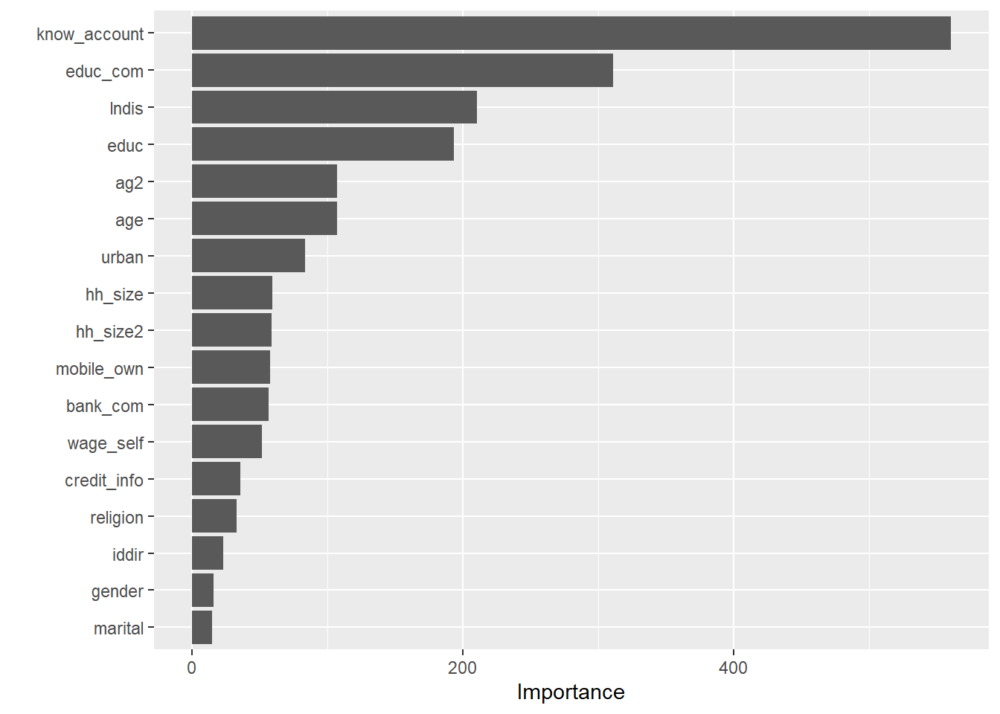
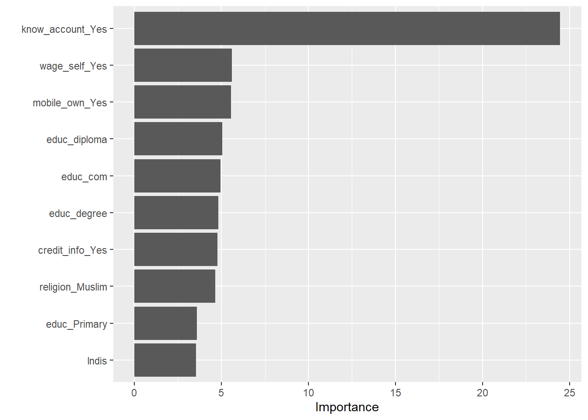
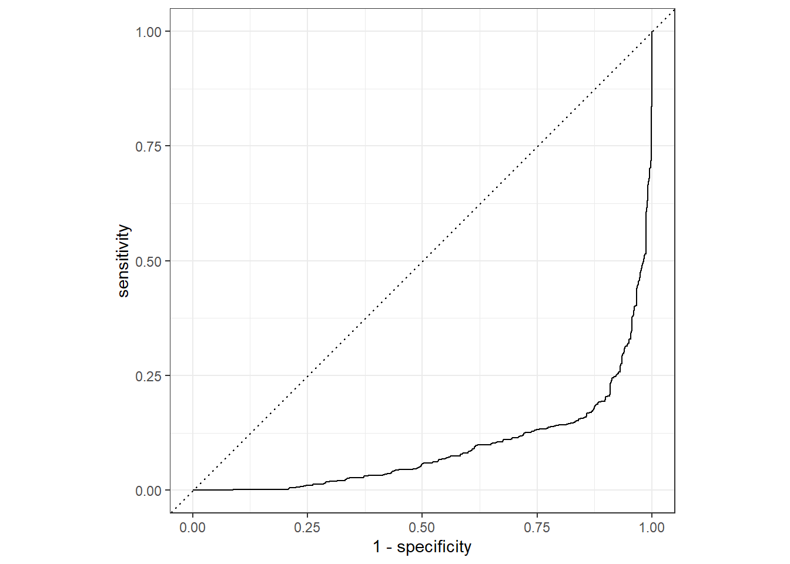
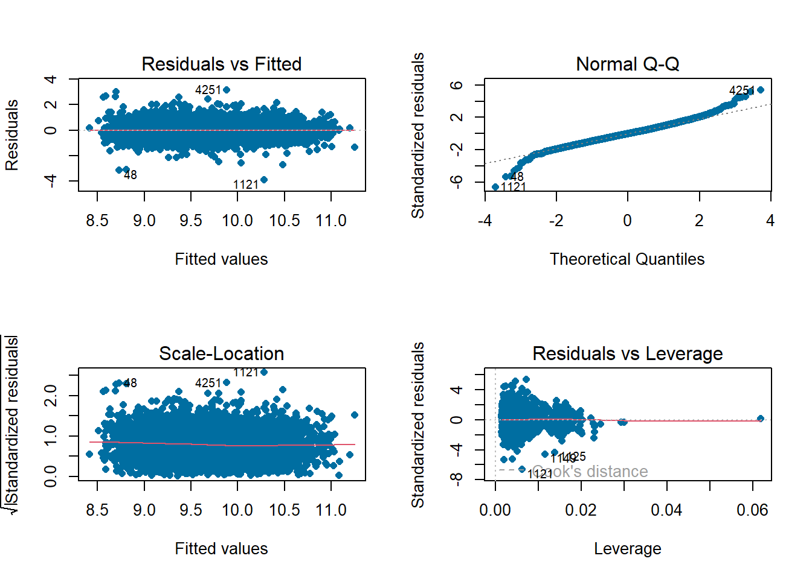
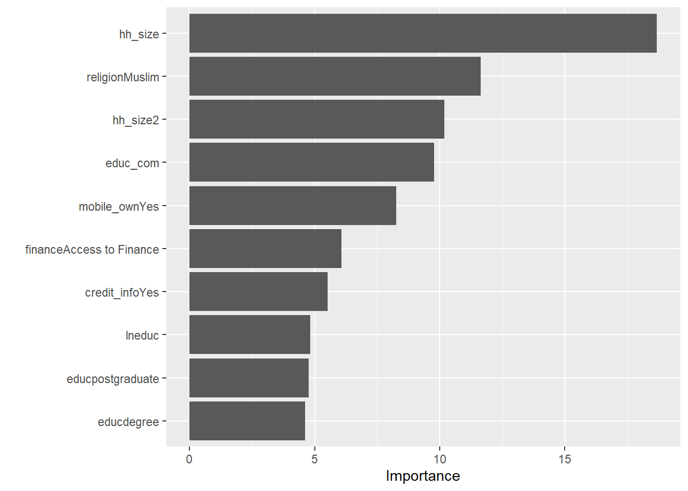
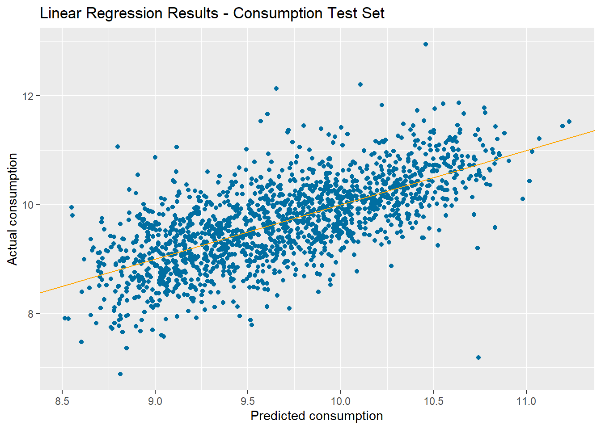
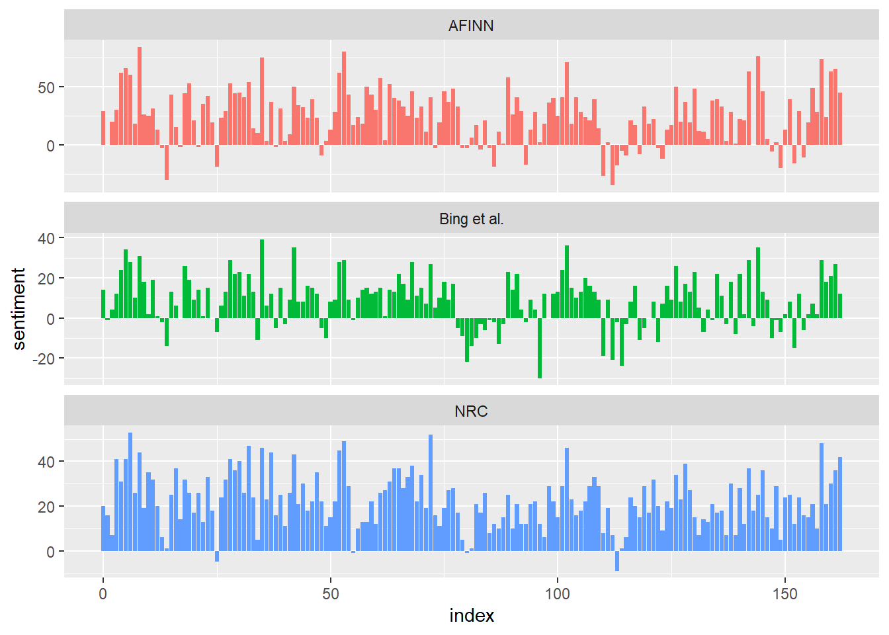
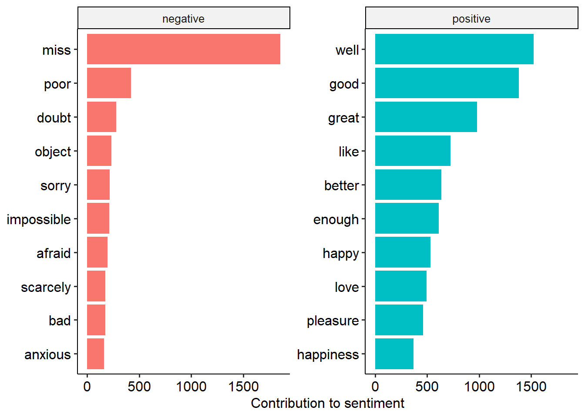
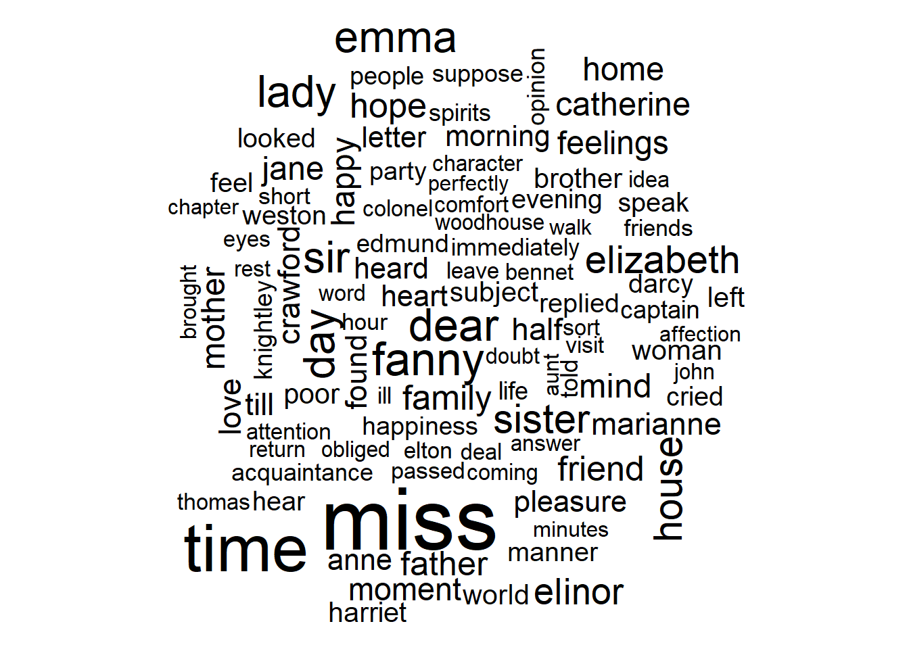
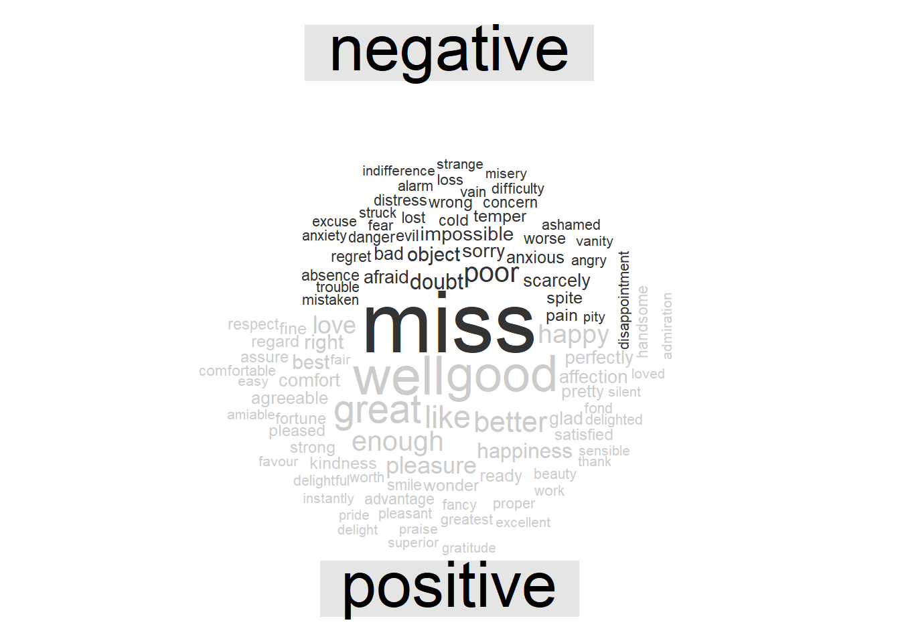

Chapter 5 Advanced R
5.1 Machine learning
5.1.1 Random Forest
library(caret)## Loading required package: ggplot2## Loading required package: latticelibrary(rpart.plot)## Loading required package: rpartlibrary(tidymodels)## ── Attaching packages ────────────────────────────────────── tidymodels 0.2.0 ──## ✔ broom 0.8.0 ✔ rsample 0.1.1
## ✔ dials 0.1.1 ✔ tibble 3.1.7
## ✔ dplyr 1.0.9 ✔ tidyr 1.2.0
## ✔ infer 1.0.0 ✔ tune 0.2.0
## ✔ modeldata 0.1.1 ✔ workflows 0.2.6
## ✔ parsnip 0.2.1 ✔ workflowsets 0.2.1
## ✔ purrr 0.3.4 ✔ yardstick 0.0.9
## ✔ recipes 0.2.0## ── Conflicts ───────────────────────────────────────── tidymodels_conflicts() ──
## ✖ purrr::discard() masks scales::discard()
## ✖ dplyr::filter() masks stats::filter()
## ✖ dplyr::lag() masks stats::lag()
## ✖ purrr::lift() masks caret::lift()
## ✖ yardstick::precision() masks caret::precision()
## ✖ dials::prune() masks rpart::prune()
## ✖ yardstick::recall() masks caret::recall()
## ✖ yardstick::sensitivity() masks caret::sensitivity()
## ✖ yardstick::specificity() masks caret::specificity()
## ✖ recipes::step() masks stats::step()
## • Search for functions across packages at https://www.tidymodels.org/find/library(vip)##
## Attaching package: 'vip'## The following object is masked from 'package:utils':
##
## vilibrary(haven)
library(here)## here() starts at D:/Github/economics_researchlibrary(ranger)df <- read_dta(here("data", "master_data2.dta"))
df <- df %>% dplyr::select(household_id, lntot, lneduc, lntot, finance, mobile_own, educ, iddir, marital, religion, age, ag2, gender, hh_size, hh_size2, know_account, wage_self, credit_info, urban, bank_com, educ_com, lndis) %>% drop_na()
data<-as_factor(df)summary(data)## household_id lntot lneduc
## Length:6598 Min. : 5.583 Min. : 0.000
## Class :character 1st Qu.: 9.154 1st Qu.: 0.000
## Mode :character Median : 9.689 Median : 3.798
## Mean : 9.681 Mean : 3.176
## 3rd Qu.:10.205 3rd Qu.: 5.668
## Max. :13.038 Max. :12.449
##
## finance mobile_own educ iddir
## No Access to Finance:3573 No :3037 Non education:3016 No :3632
## Access to Finance :3025 Yes:3561 Primary :2093 Yes:2966
## secondary : 492
## certificate : 131
## diploma : 373
## degree : 382
## postgraduate : 111
## marital religion age ag2
## Non married:2016 Non Muslim:4123 Min. :18.00 Min. : 324
## Married :4582 Muslim :2475 1st Qu.:30.00 1st Qu.: 900
## Median :40.00 Median :1600
## Mean :42.26 Mean :2013
## 3rd Qu.:52.00 3rd Qu.:2704
## Max. :99.00 Max. :9801
##
## gender hh_size hh_size2 know_account wage_self
## Female:2096 Min. : 1.000 Min. : 1.00 No :3132 No :4176
## Male :4502 1st Qu.: 3.000 1st Qu.: 9.00 Yes:3466 Yes:2422
## Median : 4.000 Median : 16.00
## Mean : 4.242 Mean : 23.24
## 3rd Qu.: 6.000 3rd Qu.: 36.00
## Max. :19.000 Max. :361.00
##
## credit_info urban bank_com educ_com lndis
## No :5501 Rural:3002 NO :3846 Min. :0.0000 Min. :0.0000
## Yes:1097 Urban:3596 Yes:2752 1st Qu.:0.3333 1st Qu.:0.6931
## Median :0.9333 Median :1.6094
## Mean :1.1425 Mean :1.9640
## 3rd Qu.:1.7333 3rd Qu.:3.0445
## Max. :4.6000 Max. :6.3986
## split the data into trainng (75%) and testing (25%)
set.seed(6598)
data_split <- initial_split(data, prop = 3/4)extract training and testing sets
data_train <- training(data_split)
data_test <- testing(data_split)At some point we’re going to want to do some parameter tuning, and to do that we’re going to want to use cross-validation. So we can create a cross-validated version of the training set in preparation for that moment using vfold_cv().
create CV object from training data
data_cv <- vfold_cv(data_train)define the recipe
data_recipe <-
# which consists of the formula (outcome ~ predictors)
recipe(finance ~ mobile_own + educ + iddir +
marital + religion + age + ag2 + gender + hh_size + hh_size2 + know_account +
wage_self + credit_info + urban + bank_com + educ_com + lndis,
data = data) %>%
# and some pre-processing steps
step_normalize(all_numeric()) %>%
step_impute_knn(all_predictors())rf_model <-
# specify that the model is a random forest
rand_forest() %>%
# specify that the `mtry` parameter needs to be tuned
set_args(mtry = tune()) %>%
# select the engine/package that underlies the model
set_engine("ranger", importance = "impurity") %>%
# choose either the continuous regression or binary classification mode
set_mode("classification") set the workflow
rf_workflow <- workflow() %>%
# add the recipe
add_recipe(data_recipe) %>%
# add the model
add_model(rf_model)specify which values eant to try
rf_grid <- expand.grid(mtry = c(3, 4, 5))extract results
rf_tune_results <- rf_workflow %>%
tune_grid(resamples = data_cv, #CV object
grid = rf_grid, # grid of values to try
metrics = metric_set(accuracy, roc_auc) # metrics we care about
)print results
rf_tune_results %>%
collect_metrics()## # A tibble: 6 × 7
## mtry .metric .estimator mean n std_err .config
## <dbl> <chr> <chr> <dbl> <int> <dbl> <chr>
## 1 3 accuracy binary 0.842 10 0.00361 Preprocessor1_Model1
## 2 3 roc_auc binary 0.910 10 0.00326 Preprocessor1_Model1
## 3 4 accuracy binary 0.841 10 0.00402 Preprocessor1_Model2
## 4 4 roc_auc binary 0.910 10 0.00345 Preprocessor1_Model2
## 5 5 accuracy binary 0.843 10 0.00394 Preprocessor1_Model3
## 6 5 roc_auc binary 0.910 10 0.00349 Preprocessor1_Model3param_final <- rf_tune_results %>%
select_best(metric = "accuracy")
param_final## # A tibble: 1 × 2
## mtry .config
## <dbl> <chr>
## 1 5 Preprocessor1_Model3rf_workflow <- rf_workflow %>%
finalize_workflow(param_final)rf_fit <- rf_workflow %>%
# fit on the training set and evaluate on test set
last_fit(data_split)test_performance <- rf_fit %>% collect_metrics()
test_performance## # A tibble: 2 × 4
## .metric .estimator .estimate .config
## <chr> <chr> <dbl> <chr>
## 1 accuracy binary 0.856 Preprocessor1_Model1
## 2 roc_auc binary 0.923 Preprocessor1_Model1Overall the performance is very good, with an accuracy of 0.83 and an AUC of 0.903.
generate predictions from the test set
test_predictions <- rf_fit %>% collect_predictions()generate a confusion matrix
test_predictions %>%
conf_mat(truth = finance, estimate = .pred_class)## Truth
## Prediction No Access to Finance Access to Finance
## No Access to Finance 749 112
## Access to Finance 125 664We could also plot distributions of the predicted probability distributions for each class.
colnames(test_predictions)## [1] "id" ".pred_No Access to Finance"
## [3] ".pred_Access to Finance" ".row"
## [5] ".pred_class" "finance"
## [7] ".config"test_predictions %>%
ggplot() +
geom_density(aes(x = `.pred_Access to Finance`, fill = finance),
alpha = 0.5)
Fitting and using your final model
# the last model
last_rf_mod <-
rand_forest() %>%
set_engine("ranger", importance = "impurity") %>%
set_mode("classification")rf_model <-
# specify that the model is a random forest
rand_forest() %>%
# specify that the `mtry` parameter needs to be tuned
set_args(mtry = tune()) %>%
# select the engine/package that underlies the model
set_engine("ranger", importance = "impurity") %>%
# choose either the continuous regression or binary classification mode
set_mode("classification") the last workflow
last_rf_workflow <-
rf_workflow %>%
update_model(last_rf_mod)the last fit
set.seed(6598)
last_rf_fit <-
last_rf_workflow %>%
last_fit(data_split)
last_rf_fit %>%
collect_metrics()## # A tibble: 2 × 4
## .metric .estimator .estimate .config
## <chr> <chr> <dbl> <chr>
## 1 accuracy binary 0.856 Preprocessor1_Model1
## 2 roc_auc binary 0.923 Preprocessor1_Model1last_rf_fit %>%
pluck(".workflow", 1) %>%
extract_fit_parsnip() %>%
vip(num_features = 20)
5.1.2 Logistic Regression
df <- read_dta(here("data", "master_data2.dta"))
df <- df %>% select(finance, mobile_own, educ, iddir,
marital, religion, age, ag2, gender, hh_size, hh_size2, know_account,
wage_self, credit_info, urban, bank_com, educ_com, lndis) %>% drop_na()
data<-as_factor(df)set.seed(345)
data_split <- initial_split(data, prop = 0.75,
strata = finance)
data_training <- data_split %>% training()
data_test <- data_split %>% testing()data_recipe <- recipe(finance ~ ., data = data_training) %>%
step_YeoJohnson(all_numeric(), -all_outcomes()) %>%
step_normalize(all_numeric(), -all_outcomes()) %>%
step_dummy(all_nominal(), -all_outcomes())
data_recipe %>%
prep() %>%
bake(new_data = data_training)## # A tibble: 4,947 × 23
## age ag2 hh_size hh_size2 educ_com lndis finance mobile_own_Yes
## <dbl> <dbl> <dbl> <dbl> <dbl> <dbl> <fct> <dbl>
## 1 0.0338 0.0341 0.448 0.457 -1.03 0.795 Access to Fin… 0
## 2 0.834 0.834 2.30 2.26 -1.03 0.781 Access to Fin… 0
## 3 0.988 0.988 0.448 0.457 -1.03 0.781 Access to Fin… 0
## 4 -0.526 -0.525 0.448 0.457 -1.03 0.809 Access to Fin… 0
## 5 -0.526 -0.525 -0.459 -0.466 -0.395 0.500 Access to Fin… 0
## 6 -1.12 -1.12 -1.04 -1.06 -0.395 0.600 Access to Fin… 1
## 7 0.613 0.613 1.77 1.76 -0.395 0.500 Access to Fin… 0
## 8 0.670 0.670 1.48 1.48 -0.395 0.500 Access to Fin… 1
## 9 0.307 0.307 1.48 1.48 -0.975 0.208 Access to Fin… 1
## 10 -1.01 -1.01 -1.04 -1.06 -0.0734 0.809 Access to Fin… 1
## # … with 4,937 more rows, and 15 more variables: educ_Primary <dbl>,
## # educ_secondary <dbl>, educ_certificate <dbl>, educ_diploma <dbl>,
## # educ_degree <dbl>, educ_postgraduate <dbl>, iddir_Yes <dbl>,
## # marital_Married <dbl>, religion_Muslim <dbl>, gender_Male <dbl>,
## # know_account_Yes <dbl>, wage_self_Yes <dbl>, credit_info_Yes <dbl>,
## # urban_Urban <dbl>, bank_com_Yes <dbl>model specification
logistic_model <- logistic_reg() %>%
set_engine('glm') %>%
set_mode('classification')create workflow
data_wf <- workflow() %>%
add_model(logistic_model) %>%
add_recipe(data_recipe)fit the model
data_logistic_fit <- data_wf %>%
fit(data = data_training)exploring trained data
data_trained_model <- data_logistic_fit %>%
extract_fit_parsnip()Variable importance
vip(data_trained_model)
evaluate perfromance
predictions_categories <- predict(data_logistic_fit, new_data = data_test)
predictions_categories## # A tibble: 1,651 × 1
## .pred_class
## <fct>
## 1 No Access to Finance
## 2 Access to Finance
## 3 No Access to Finance
## 4 No Access to Finance
## 5 No Access to Finance
## 6 No Access to Finance
## 7 Access to Finance
## 8 Access to Finance
## 9 No Access to Finance
## 10 Access to Finance
## # … with 1,641 more rowspredictions_probabilities <- predict(data_logistic_fit, new_data = data_test, type = 'prob')
predictions_probabilities## # A tibble: 1,651 × 2
## `.pred_No Access to Finance` `.pred_Access to Finance`
## <dbl> <dbl>
## 1 0.942 0.0577
## 2 0.383 0.617
## 3 0.856 0.144
## 4 0.937 0.0628
## 5 0.865 0.135
## 6 0.920 0.0804
## 7 0.311 0.689
## 8 0.267 0.733
## 9 0.857 0.143
## 10 0.125 0.875
## # … with 1,641 more rowscombine together
test_results <- data_test %>% select(finance) %>%
bind_cols(predictions_categories) %>%
bind_cols(predictions_probabilities)
test_results## # A tibble: 1,651 × 4
## finance .pred_class `.pred_No Access…` `.pred_Access …`
## <fct> <fct> <dbl> <dbl>
## 1 Access to Finance No Access to Finance 0.942 0.0577
## 2 Access to Finance Access to Finance 0.383 0.617
## 3 No Access to Finance No Access to Finance 0.856 0.144
## 4 No Access to Finance No Access to Finance 0.937 0.0628
## 5 No Access to Finance No Access to Finance 0.865 0.135
## 6 No Access to Finance No Access to Finance 0.920 0.0804
## 7 Access to Finance Access to Finance 0.311 0.689
## 8 No Access to Finance Access to Finance 0.267 0.733
## 9 No Access to Finance No Access to Finance 0.857 0.143
## 10 Access to Finance Access to Finance 0.125 0.875
## # … with 1,641 more rowsconfusion matrix
conf_mat(test_results, truth = finance, estimate = .pred_class)## Truth
## Prediction No Access to Finance Access to Finance
## No Access to Finance 740 98
## Access to Finance 154 659f score
f_meas(test_results, truth = finance, estimate = .pred_class)## # A tibble: 1 × 3
## .metric .estimator .estimate
## <chr> <chr> <dbl>
## 1 f_meas binary 0.855colnames(test_results)## [1] "finance" ".pred_class"
## [3] ".pred_No Access to Finance" ".pred_Access to Finance"ROC curve
roc_curve(test_results, truth = finance, estimate = `.pred_Access to Finance`) %>%
autoplot()
roc_auc(test_results, truth = finance, `.pred_Access to Finance`)## # A tibble: 1 × 3
## .metric .estimator .estimate
## <chr> <chr> <dbl>
## 1 roc_auc binary 0.09235.1.3 Linear Regression
library(tidyverse)## ── Attaching packages ─────────────────────────────────────── tidyverse 1.3.1 ──## ✔ readr 2.1.2 ✔ forcats 0.5.1
## ✔ stringr 1.4.0## ── Conflicts ────────────────────────────────────────── tidyverse_conflicts() ──
## ✖ readr::col_factor() masks scales::col_factor()
## ✖ purrr::discard() masks scales::discard()
## ✖ dplyr::filter() masks stats::filter()
## ✖ stringr::fixed() masks recipes::fixed()
## ✖ dplyr::lag() masks stats::lag()
## ✖ purrr::lift() masks caret::lift()
## ✖ readr::spec() masks yardstick::spec()library(tidymodels)
library(vip) # for variable importance
library(haven)load data set
df <- read_dta(here("data", "master_data2.dta"))
df <- df %>% select(lntot, lneduc, lntot, finance, mobile_own, educ, iddir,
marital, religion, age, ag2, gender, hh_size, hh_size2, know_account,
wage_self, credit_info, urban, bank_com, educ_com, lndis) %>% drop_na()
data<-as_factor(df)set.seed(314)
# Create a split object
data_split <- initial_split(data, prop = 0.75,
strata = lntot)
# Build training data set
data_training <- data_split %>%
training()
# Build testing data set
data_test <- data_split %>%
testing()Model Specification
lm_model <- linear_reg() %>%
set_engine('lm') %>% # adds lm implementation of linear regression
set_mode('regression')
#View object properties
lm_model## Linear Regression Model Specification (regression)
##
## Computational engine: lmFitting to Training Data
lm_fit <- lm_model %>%
fit(lntot ~ ., data = data_training)
# View lm_fit properties
lm_fit## parsnip model object
##
##
## Call:
## stats::lm(formula = lntot ~ ., data = data)
##
## Coefficients:
## (Intercept) lneduc financeAccess to Finance
## 9.854e+00 1.573e-02 1.466e-01
## mobile_ownYes educPrimary educsecondary
## 1.559e-01 7.871e-02 4.243e-02
## educcertificate educdiploma educdegree
## 1.727e-01 1.238e-01 2.171e-01
## educpostgraduate iddirYes maritalMarried
## 3.541e-01 1.647e-02 7.008e-02
## religionMuslim age ag2
## 2.192e-01 -4.738e-03 6.036e-05
## genderMale hh_size hh_size2
## -2.133e-02 -2.739e-01 1.283e-02
## know_accountYes wage_selfYes credit_infoYes
## 7.837e-02 4.397e-02 1.403e-01
## urbanUrban bank_comYes educ_com
## 1.026e-01 1.014e-01 1.433e-01
## lndis
## 2.211e-02Exploring Training Results
names(lm_fit)## [1] "lvl" "spec" "fit" "preproc" "elapsed"summary(lm_fit$fit)##
## Call:
## stats::lm(formula = lntot ~ ., data = data)
##
## Residuals:
## Min 1Q Median 3Q Max
## -3.8906 -0.3765 -0.0121 0.3522 3.1539
##
## Coefficients:
## Estimate Std. Error t value Pr(>|t|)
## (Intercept) 9.854e+00 8.255e-02 119.369 < 2e-16 ***
## lneduc 1.573e-02 3.259e-03 4.827 1.43e-06 ***
## financeAccess to Finance 1.466e-01 2.418e-02 6.064 1.43e-09 ***
## mobile_ownYes 1.559e-01 1.887e-02 8.264 < 2e-16 ***
## educPrimary 7.871e-02 2.380e-02 3.306 0.000952 ***
## educsecondary 4.243e-02 4.058e-02 1.046 0.295806
## educcertificate 1.727e-01 6.969e-02 2.478 0.013230 *
## educdiploma 1.238e-01 4.432e-02 2.793 0.005250 **
## educdegree 2.171e-01 4.706e-02 4.613 4.07e-06 ***
## educpostgraduate 3.541e-01 7.439e-02 4.760 1.99e-06 ***
## iddirYes 1.647e-02 1.829e-02 0.901 0.367817
## maritalMarried 7.008e-02 2.506e-02 2.797 0.005186 **
## religionMuslim 2.192e-01 1.885e-02 11.629 < 2e-16 ***
## age -4.738e-03 3.302e-03 -1.435 0.151387
## ag2 6.036e-05 3.280e-05 1.840 0.065829 .
## genderMale -2.133e-02 2.306e-02 -0.925 0.354870
## hh_size -2.739e-01 1.467e-02 -18.678 < 2e-16 ***
## hh_size2 1.283e-02 1.260e-03 10.181 < 2e-16 ***
## know_accountYes 7.837e-02 2.494e-02 3.142 0.001687 **
## wage_selfYes 4.397e-02 1.960e-02 2.243 0.024943 *
## credit_infoYes 1.403e-01 2.539e-02 5.527 3.42e-08 ***
## urbanUrban 1.026e-01 2.842e-02 3.609 0.000310 ***
## bank_comYes 1.014e-01 2.634e-02 3.849 0.000120 ***
## educ_com 1.433e-01 1.465e-02 9.780 < 2e-16 ***
## lndis 2.211e-02 8.476e-03 2.609 0.009110 **
## ---
## Signif. codes: 0 '***' 0.001 '**' 0.01 '*' 0.05 '.' 0.1 ' ' 1
##
## Residual standard error: 0.5892 on 4921 degrees of freedom
## Multiple R-squared: 0.448, Adjusted R-squared: 0.4453
## F-statistic: 166.4 on 24 and 4921 DF, p-value: < 2.2e-16These plots provide a check for the main assumptions of the linear regression model.
par(mfrow=c(2,2)) # plot all 4 plots in one
plot(lm_fit$fit,
pch = 16, # optional parameters to make points blue
col = '#006EA1')
Data frame of estimated coefficients
pa<- tidy(lm_fit)
view(pa)Performance metrics on training data
glance(lm_fit)## # A tibble: 1 × 12
## r.squared adj.r.squared sigma statistic p.value df logLik AIC BIC
## <dbl> <dbl> <dbl> <dbl> <dbl> <dbl> <dbl> <dbl> <dbl>
## 1 0.448 0.445 0.589 166. 0 24 -4389. 8831. 9000.
## # … with 3 more variables: deviance <dbl>, df.residual <int>, nobs <int>vip(lm_fit)
Evaluating Test Set Accuracy
predict(lm_fit, new_data = data_test)## # A tibble: 1,652 × 1
## .pred
## <dbl>
## 1 8.65
## 2 8.65
## 3 9.94
## 4 9.35
## 5 9.67
## 6 8.90
## 7 9.63
## 8 8.85
## 9 9.06
## 10 9.98
## # … with 1,642 more rowsdata_test_results <- predict(lm_fit, new_data = data_test) %>%
bind_cols(data_test)
# View results
data_test_results## # A tibble: 1,652 × 21
## .pred lntot lneduc finance mobile_own educ iddir marital religion age
## <dbl> <dbl> <dbl> <fct> <fct> <fct> <fct> <fct> <fct> <dbl>
## 1 8.65 8.47 5.21 No Access t… No Non … No Married Non Mus… 35
## 2 8.65 9.36 0 Access to F… No Non … No Married Non Mus… 53
## 3 9.94 9.08 3.54 Access to F… Yes Prim… No Non ma… Non Mus… 27
## 4 9.35 9.45 4.54 No Access t… No Prim… No Non ma… Non Mus… 36
## 5 9.67 9.90 0 No Access t… No Non … No Non ma… Non Mus… 60
## 6 8.90 8.97 0 No Access t… No Non … No Married Non Mus… 32
## 7 9.63 9.09 0 No Access t… Yes Prim… No Married Non Mus… 36
## 8 8.85 8.46 4.84 No Access t… Yes Non … No Married Non Mus… 50
## 9 9.06 8.34 4.98 Access to F… Yes Prim… No Married Non Mus… 44
## 10 9.98 9.42 0 No Access t… Yes Non … No Non ma… Non Mus… 25
## # … with 1,642 more rows, and 11 more variables: ag2 <dbl>, gender <fct>,
## # hh_size <dbl>, hh_size2 <dbl>, know_account <fct>, wage_self <fct>,
## # credit_info <fct>, urban <fct>, bank_com <fct>, educ_com <dbl>, lndis <dbl>Calculating RMSE and R2 on the Test Data
RMSE on test set
rmse(data_test_results,
truth = lntot,
estimate = .pred)## # A tibble: 1 × 3
## .metric .estimator .estimate
## <chr> <chr> <dbl>
## 1 rmse standard 0.573R2 on test set
rsq(data_test_results,
truth = lntot,
estimate = .pred)## # A tibble: 1 × 3
## .metric .estimator .estimate
## <chr> <chr> <dbl>
## 1 rsq standard 0.468R2 plot
ggplot(data = data_test_results,
mapping = aes(x = .pred, y = lntot)) +
geom_point(color = '#006EA1') +
geom_abline(intercept = 0, slope = 1, color = 'orange') +
labs(title = 'Linear Regression Results - Consumption Test Set',
x = 'Predicted consumption',
y = 'Actual consumption')
5.3 Text mining
5.3.1 Sentiment Analysis
Sentiment Analysis (SA) extracts information on emotion or opinion from natural language (Silge and Robinson 2017). Most forms of SA provides information about positive or negative polarity, e.g. whether a tweet is positive or negative.
This tutorial leverages the data provided in the janeaustenr package. This package contains the complete text of Jane Austen’s 6 completed, published novels, formatted to be convenient for text analysis.
The tidytext package contains three sentiment lexicons in the sentiments dataset.
The three lexicons are
- AFINN from Finn Årup Nielsen
- bing from Bing Liu and collaborators
- nrc from Saif Mohammad and Peter Turney
library(tidytext)
library(janeaustenr)
library(dplyr)
library(stringr)
library(ggpubr)
library(textdata)
tidy_books <- austen_books() %>%
group_by(book) %>%
mutate(
linenumber = row_number(),
chapter = cumsum(str_detect(text,
regex("^chapter [\\divxlc]",
ignore_case = TRUE)))) %>%
ungroup() %>%
unnest_tokens(word, text)tidy_books %>% group_by(book) %>% count()## # A tibble: 6 × 2
## # Groups: book [6]
## book n
## <fct> <int>
## 1 Sense & Sensibility 119957
## 2 Pride & Prejudice 122204
## 3 Mansfield Park 160460
## 4 Emma 160996
## 5 Northanger Abbey 77780
## 6 Persuasion 83658nrc_se <- get_sentiments("nrc")nrc_se %>% group_by(sentiment) %>% count()## # A tibble: 10 × 2
## # Groups: sentiment [10]
## sentiment n
## <chr> <int>
## 1 anger 1246
## 2 anticipation 837
## 3 disgust 1056
## 4 fear 1474
## 5 joy 687
## 6 negative 3318
## 7 positive 2308
## 8 sadness 1187
## 9 surprise 532
## 10 trust 1230nrc_bing <- get_sentiments("bing")nrc_bing %>% group_by(sentiment) %>% count()## # A tibble: 2 × 2
## # Groups: sentiment [2]
## sentiment n
## <chr> <int>
## 1 negative 4781
## 2 positive 2005nrc_afinn <- get_sentiments("afinn")nrc_afinn %>% group_by(value) %>% count()## # A tibble: 11 × 2
## # Groups: value [11]
## value n
## <dbl> <int>
## 1 -5 16
## 2 -4 43
## 3 -3 264
## 4 -2 966
## 5 -1 309
## 6 0 1
## 7 1 208
## 8 2 448
## 9 3 172
## 10 4 45
## 11 5 5nrc_joy <- get_sentiments("nrc") %>%
filter(sentiment == "joy")
tidy_books %>%
filter(book == "Emma") %>%
inner_join(nrc_joy) %>%
count(word, sort = TRUE)## Joining, by = "word"## # A tibble: 301 × 2
## word n
## <chr> <int>
## 1 good 359
## 2 friend 166
## 3 hope 143
## 4 happy 125
## 5 love 117
## 6 deal 92
## 7 found 92
## 8 present 89
## 9 kind 82
## 10 happiness 76
## # … with 291 more rowslibrary(tidyr)
jane_austen_sentiment <- tidy_books %>%
inner_join(get_sentiments("bing")) %>%
count(book, index = linenumber %/% 80, sentiment) %>%
pivot_wider(names_from = sentiment, values_from = n, values_fill = 0) %>%
mutate(sentiment = positive - negative)## Joining, by = "word"create an index that breaks up each book by 500 words; this is the approximate number of words on every two pages so this will allow us to assess changes in sentiment even within chapters
library(ggplot2)
ggplot(jane_austen_sentiment, aes(index, sentiment, fill = book)) +
geom_col(show.legend = FALSE) +
facet_wrap(~book, ncol = 2, scales = "free_x") 
pride_prejudice <- tidy_books %>%
filter(book == "Pride & Prejudice")
pride_prejudice## # A tibble: 122,204 × 4
## book linenumber chapter word
## <fct> <int> <int> <chr>
## 1 Pride & Prejudice 1 0 pride
## 2 Pride & Prejudice 1 0 and
## 3 Pride & Prejudice 1 0 prejudice
## 4 Pride & Prejudice 3 0 by
## 5 Pride & Prejudice 3 0 jane
## 6 Pride & Prejudice 3 0 austen
## 7 Pride & Prejudice 7 1 chapter
## 8 Pride & Prejudice 7 1 1
## 9 Pride & Prejudice 10 1 it
## 10 Pride & Prejudice 10 1 is
## # … with 122,194 more rowsafinn <- pride_prejudice %>%
inner_join(get_sentiments("afinn")) %>%
group_by(index = linenumber %/% 80) %>%
summarise(sentiment = sum(value)) %>%
mutate(method = "AFINN")## Joining, by = "word"bing_and_nrc <- bind_rows(
pride_prejudice %>%
inner_join(get_sentiments("bing")) %>%
mutate(method = "Bing et al."),
pride_prejudice %>%
inner_join(get_sentiments("nrc") %>%
filter(sentiment %in% c("positive",
"negative"))
) %>%
mutate(method = "NRC")) %>%
count(method, index = linenumber %/% 80, sentiment) %>%
pivot_wider(names_from = sentiment,
values_from = n,
values_fill = 0) %>%
mutate(sentiment = positive - negative)## Joining, by = "word"
## Joining, by = "word"bind_rows(afinn,
bing_and_nrc) %>%
ggplot(aes(index, sentiment, fill = method)) +
geom_col(show.legend = FALSE) +
facet_wrap(~method, ncol = 1, scales = "free_y")
get_sentiments("nrc") %>%
filter(sentiment %in% c("positive", "negative")) %>%
count(sentiment)## # A tibble: 2 × 2
## sentiment n
## <chr> <int>
## 1 negative 3318
## 2 positive 2308get_sentiments("bing") %>%
count(sentiment)## # A tibble: 2 × 2
## sentiment n
## <chr> <int>
## 1 negative 4781
## 2 positive 2005bing_word_counts <- tidy_books %>%
inner_join(get_sentiments("bing")) %>%
count(word, sentiment, sort = TRUE) %>%
ungroup()## Joining, by = "word"bing_word_counts %>%
group_by(sentiment) %>%
slice_max(n, n = 10) %>%
ungroup() %>%
mutate(word = reorder(word, n)) %>%
ggplot(aes(n, word, fill = sentiment)) +
geom_col(show.legend = FALSE) +
facet_wrap(~sentiment, scales = "free_y") +
labs(x = "Contribution to sentiment",
y = NULL) +
theme_pubr()
custom_stop_words <- bind_rows(tibble(word = c("miss"),
lexicon = c("custom")),
stop_words)library(wordcloud)## Loading required package: RColorBrewertidy_books %>%
anti_join(stop_words) %>%
count(word) %>%
with(wordcloud(word, n, max.words = 100))## Joining, by = "word"
library(reshape2)##
## Attaching package: 'reshape2'## The following object is masked from 'package:tidyr':
##
## smithstidy_books %>%
inner_join(get_sentiments("bing")) %>%
count(word, sentiment, sort = TRUE) %>%
acast(word ~ sentiment, value.var = "n", fill = 0) %>%
comparison.cloud(colors = c("gray20", "gray80"),
max.words = 100)## Joining, by = "word"